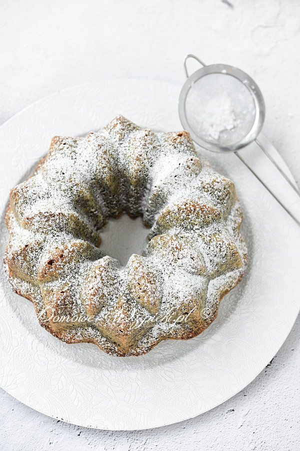

Babka makowo - kokosowa

Opis
Pyszna, wilgotna, mocno makowa babka z dodatkiem wiórków kokosowych. Mak zdecydowanie dominuje nad smakiem kokosu. Babka w smaku przypomina trochę Białkowca, ale w przeciwieństwie do niego jest przygotowana na całych jajkach.
Składniki
- 150 g suchego maku zmielonego
- 220 g masła (lub margaryny)
- 170 g cukru
- sok z ½ cytryny
- 6 jajek
- 100 g mąki pszennej
- 2 płaskie łyżeczki proszku do pieczenia
- 100 g wiórków kokosowych
- cukier puder
Sposób przygotowania
-
Formę na babkę z kominkiem (u mnie o średnicy 24 cm, ale może być również 22 cm) wysmarować masłem (lub margaryną) i posypać mąką. Odstawić na bok.
-
Miękkie masło utrzeć z cukrem na jasną masę. Następnie dodać sok z połowy cytryny. Dalej miksując, dodawać po kolei po jednym jajku. (Każde jajko miksować ok. ½ minuty).
-
Mąkę wymieszać z proszkiem do pieczenia, makiem i wiórkami kokosowymi. Wmieszać delikatnie do masy jajecznej.
-
Ciasto przełożyć do przygotowanej formy na babkę.
-
Piec w nagrzanym piekarniku do suchego patyczka, ok. 40 minut w temperaturze 180°C (grzałka góra- dół).
-
Po upieczeniu ciasto wyciągnąć z piekarnika i pozostawić na kilka minut w formie. Następnie wyłożyć na kratkę kuchenną i pozostawić do całkowitego ostygnięcia.
-
Chłodne ciasto posypać cukrem pudrem. (Można również babkę polukrować).